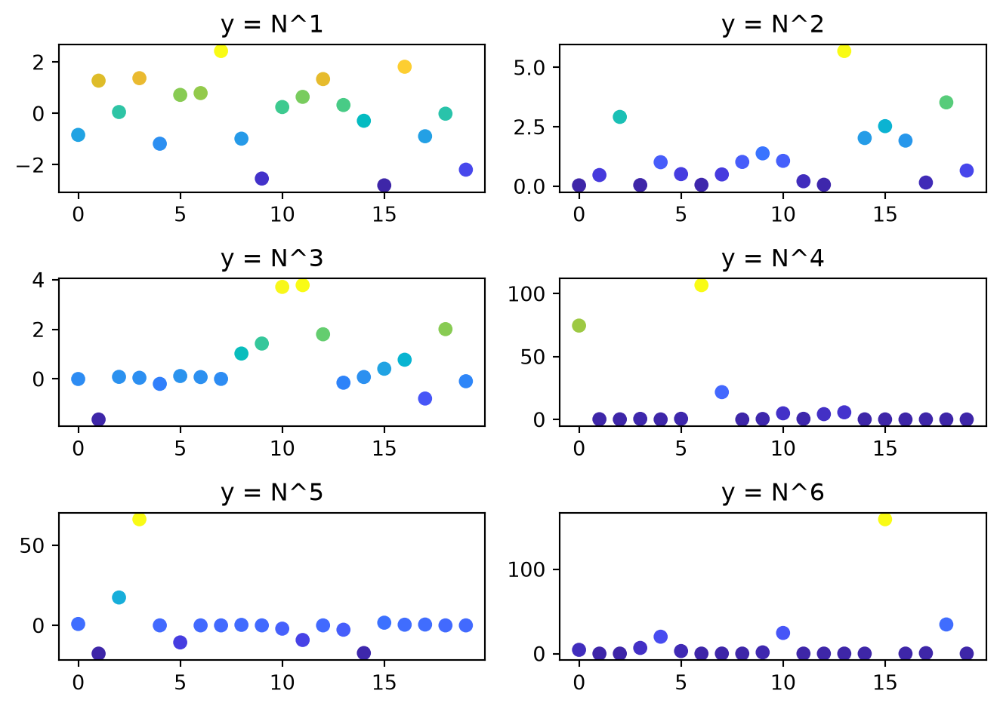

import sciris as sc
od = sc.odict(a=['some', 'strings'], b=[1,2,3])
print(od)#0: 'a': ['some', 'strings']
#1: 'b': [1, 2, 3]Needing a better way of ordering dictionaries was one of the original inspirations for Sciris back in 2014. In those dark days of Python <=3.6, dictionaries were unordered, which meant that dict.keys() could give you anything. (And you still can’t do dict.keys()[0], much less dict[0]). This tutorial describes Sciris’ ordered dict, the odict, its close cousin the objdict, and its pandas-powered pseudorelative, the dataframe.
odictIn basically every situation except one, an odict can be used like a dict. (Since this is a tutorial, see if you can intuit what that one situation is!) For example, creating an odictworks just like creating a regular dict:
#0: 'a': ['some', 'strings']
#1: 'b': [1, 2, 3]Okay, it doesn’t exactly look like a dict, but it is one:
Keys: ['a', 'b']
Values: [['some', 'strings'], [1, 2, 3]]
Items: [('a', ['some', 'strings']), ('b', [1, 2, 3])]Looks pretty much the same as a regular dict, except that od.keys() returns a regular list (so, yes, you can do od.keys()[0]). But, you can do things you can’t do with a regular dict, such as:
Item 0 is called a and has value ['some', 'strings']
Item 1 is called b and has value [1, 2, 3]We can, as you probably guessed, also retrieve items by index as well:
Remember the question about the situation where you wouldn’t use an odict? The answer is if your dict has integer keys, then although you still could use an odict, it’s probably best to use a regular dict. But even float keys are fine to use (if somewhat strange).
You might’ve noticed that the odict has more verbose output than a regular dict. This is because its primary purpose is as a high-level container for storing large(ish) objects.
For example, let’s say we want to store a number of named simulation results. Look at how we’re able to leverage the odict in the loop that creates the plots
import numpy as np
import matplotlib.pyplot as plt
class Sim:
def __init__(self, n=20, n_factors=6):
self.results = sc.odict()
self.n = n
self.n_factors = n_factors
def run(self):
for i in range(self.n_factors):
label = f'y = N^{i+1}'
result = np.random.randn(self.n)**(i+1)
self.results[label] = result
def plot(self):
with sc.options.context(jupyter=True): # Jupyter-optimized plotting
plt.figure()
rows,cols = sc.getrowscols(len(self.results))
for i,label,result in self.results.enumitems(): # odict magic!
plt.subplot(rows, cols, i+1)
plt.scatter(np.arange(self.n), result, c=result, cmap='parula')
plt.title(label)
sc.figlayout() # Trim whitespace from the figure
sim = Sim()
sim.run()
sim.plot()
We can quickly access these results for exploratory data analysis without having to remember and type the labels explicitly:
Sim results are
#0: 'y = N^1':
array([ 0.89966631, 0.88723396, -0.81662795, -1.36788219, 0.63572093,
-0.40217206, 1.03347293, 0.28732367, 2.10560364, -2.3184205 ,
-0.51893504, 0.322462 , 0.0573396 , 0.90403696, 0.09214903,
-2.16722049, -0.23647502, -0.68530318, 0.02738283, 1.29582392])
#1: 'y = N^2':
array([0.25495102, 0.09539056, 0.49681419, 2.53921405, 3.27360044,
0.26067762, 0.01222362, 0.08026402, 0.14993977, 0.13720447,
0.10478094, 0.12487071, 2.70740194, 0.20412048, 0.40601421,
1.18966907, 1.08871759, 0.36578408, 0.11850362, 0.06904601])
#2: 'y = N^3':
array([-6.60899136e-04, 1.25465455e+00, -2.03412095e-03, 6.14116531e+00,
2.60812836e+00, 6.68326522e-01, -2.24177880e-04, -7.22185978e-02,
-2.38149706e-01, -1.03924771e-01, 3.70536436e-02, 6.19665413e-04,
-2.82509076e-01, -3.00646236e-01, -1.70382978e-04, 8.25997669e+00,
-4.63513739e-07, 5.64729238e-02, 1.09656946e-01, -4.15671131e-01])
#3: 'y = N^4':
array([7.01183976e-10, 2.55406031e+00, 3.23998878e-01, 3.60324154e-01,
4.76568849e-01, 2.34234752e-01, 5.58329307e+00, 2.14390797e-02,
3.19090846e+00, 2.17628447e-02, 1.24152585e+00, 7.04459773e+00,
3.18448033e-01, 2.37104305e-01, 3.40506467e-01, 4.61141173e-01,
2.53958068e+01, 4.70150397e-03, 2.41430852e+01, 3.40561157e-01])
#4: 'y = N^5':
array([-1.05159518e+02, -9.59305609e-02, 1.51071033e-02, -3.47421421e+00,
2.35259003e-05, -1.57058488e-02, 8.40974129e-01, -2.98546601e-02,
1.60957680e-02, 2.06736155e+01, -9.42395670e-01, -8.96649766e-03,
-4.24490465e-01, -4.01516444e-01, -1.52161380e-05, -1.39554640e-01,
-1.46213387e-02, -1.13442919e-06, -1.49123125e+00, -3.69041615e-06])
#5: 'y = N^6':
array([4.71920472e-02, 3.01864587e-04, 3.95410602e-03, 5.66847732e-01,
2.19985680e-05, 4.40859423e-01, 1.62279775e-03, 7.73683647e-01,
5.54546610e-06, 1.90862419e-03, 1.65664658e-01, 1.47883464e+01,
9.12467742e-03, 1.34056617e-01, 8.37132106e-02, 2.92932939e-02,
1.91010881e+00, 5.91607870e-03, 7.11927745e-03, 9.42991733e-01])
The first set of results is
[ 0.89966631 0.88723396 -0.81662795 -1.36788219 0.63572093 -0.40217206
1.03347293 0.28732367 2.10560364 -2.3184205 -0.51893504 0.322462
0.0573396 0.90403696 0.09214903 -2.16722049 -0.23647502 -0.68530318
0.02738283 1.29582392]
The first set of results has median
0.0747 (95% CI: -2.2466, 1.7210)This is a have-your-cake-and-eat-it-too situation: the first set of results is correctly labeled (sim.results['y = N^1']), but you can easily access it without having to type all that (sim.results[0]).
objdictWhen you’re just writing throwaway analysis code, it can be a pain to type mydict['key1']['key2'] over and over. (Right-pinky overuse is a real medical issue.) Wouldn’t it be nice if you could just type mydict.key1.key2, but otherwise have everything work exactly like a dict? This is where the objdict comes in: it’s identical to an odict (and hence like a regular dict), except you can use “object syntax” (a.b) instead of “dict syntax” (a['b']). This is especially handy for using f-strings, since you don’t have to worry about nested quotes:
Checking ob[0] = ['some', 'strings']
Checking ob.key1 = ['some', 'strings']
Checking ob["key1"] = ['some', 'strings']In most cases, you probably want to use objdicts rather than odicts just to have the extra flexibility. Since they’re so common, sc.obj() is a shorter name for sc.objdict().
All this flexibility has a cost, although a small one. If you only need attribute access and not the other odict features (such as indexing by position), sc.dictobj() is a lighter-weight alternative that is nearly as fast as a plain dict. Approximate times per operation, in nanoseconds:
obj['a'] |
obj.a |
obj['a'] = 1 |
obj.a = 1 |
Create | |
|---|---|---|---|---|---|
dict |
10 | n/a | 15 | n/a | 50 |
sc.dictobj() |
20 | 15 | 15 | 20 | 450 |
sc.objdict() |
40 | 50 | 190 | 330 | 600 |
These differences won’t matter unless you’re doing millions of operations. But if you’re reading this, chances are high that you do sometimes need to do millions of dict operations, in which case use sc.dictobj() or a plain dict inside the loop. The other difference is that an sc.objdict() protects its methods (obj.keys = 3 raises an error, and obj['keys'] = 3 leaves obj.keys() working), whereas in an sc.dictobj() a key replaces a method of the same name.
The Sciris sc.dataframe() works exactly like pandas pd.DataFrame(), with a couple extra features, mostly to do with creation, indexing, and manipulation.
Any valid pandas dataframe initialization works exactly the same in Sciris. However, Sciris is a bit more flexible about how you can create the dataframe, again optimized for letting you make them quickly with minimal code. For example:
It’s not a huge difference, but the Sciris one is shorter. Sciris also makes it easier to define types on dataframe creation:
x y z
0 a 1.0 True
1 b 2.0 False
2 c 3.0 TrueYou can also define data types along with the columns:
x y z
0 a 1.0 True
1 b 2.0 False
2 c 3.0 TrueThe df.disp() command will do its best to show the full dataframe. By default, Sciris dataframes (just like pandas) are shown in abbreviated form:
0 1 2 3 4 5 6 \
0 0.901453 0.294503 0.804696 0.598164 0.587877 0.371850 0.805474
1 0.701433 0.604411 0.434840 0.495537 0.382995 0.756940 0.040200
2 0.763790 0.008944 0.168553 0.970130 0.390002 0.298443 0.228579
3 0.466993 0.118241 0.342027 0.639311 0.677593 0.540751 0.387566
4 0.019282 0.707996 0.604393 0.661970 0.830728 0.983221 0.263150
.. ... ... ... ... ... ... ...
65 0.386203 0.535491 0.165229 0.998598 0.258052 0.598454 0.935857
66 0.876568 0.120575 0.950600 0.112412 0.045830 0.366564 0.488284
67 0.833840 0.772638 0.089712 0.095826 0.124965 0.281233 0.729687
68 0.726658 0.892072 0.286203 0.638376 0.110133 0.120588 0.764679
69 0.988711 0.861716 0.439212 0.742913 0.194742 0.027616 0.634438
7 8 9
0 0.954735 0.265535 0.562591
1 0.293143 0.494528 0.373685
2 0.170678 0.726558 0.118821
3 0.671626 0.646413 0.690834
4 0.553938 0.983475 0.368674
.. ... ... ...
65 0.497378 0.198460 0.936244
66 0.836015 0.258626 0.688661
67 0.404195 0.563142 0.033001
68 0.519308 0.762818 0.824421
69 0.421248 0.096015 0.216149
[70 rows x 10 columns]But sometimes you just want to see the whole thing. The official way to do it in pandas is with pd.options_context, but this is a lot of effort if you’re just poking around in a script or terminal (which, if you’re printing a dataframe, you probably are). By default, df.disp() shows the whole damn thing:
0 1 2 3 4 5 6 7 8 9
0 0.9015 0.2945 0.8047 0.5982 0.5879 0.3718 0.8055 0.9547 0.2655 0.5626
1 0.7014 0.6044 0.4348 0.4955 0.3830 0.7569 0.0402 0.2931 0.4945 0.3737
2 0.7638 0.0089 0.1686 0.9701 0.3900 0.2984 0.2286 0.1707 0.7266 0.1188
3 0.4670 0.1182 0.3420 0.6393 0.6776 0.5408 0.3876 0.6716 0.6464 0.6908
4 0.0193 0.7080 0.6044 0.6620 0.8307 0.9832 0.2631 0.5539 0.9835 0.3687
5 0.6151 0.4443 0.2066 0.6356 0.4384 0.0890 0.0172 0.8343 0.3897 0.3455
6 0.6053 0.4830 0.5008 0.3702 0.4807 0.7210 0.6491 0.6583 0.0906 0.3364
7 0.9822 0.2288 0.9656 0.7583 0.3392 0.6131 0.8679 0.6086 0.2164 0.6351
8 0.2728 0.9148 0.2993 0.8752 0.1205 0.4220 0.4594 0.1737 0.4142 0.7167
9 0.5581 0.0070 0.5626 0.9374 0.4624 0.1241 0.3464 0.1697 0.5569 0.7005
10 0.2808 0.3591 0.8925 0.1286 0.4264 0.5494 0.3358 0.4442 0.9646 0.5944
11 0.4333 0.2294 0.9730 0.2287 0.8538 0.0134 0.4341 0.8251 0.8786 0.0404
12 0.2274 0.2078 0.5341 0.7747 0.0819 0.7675 0.4962 0.0413 0.0010 0.1625
13 0.0748 0.4945 0.4505 0.1540 0.7967 0.5515 0.9329 0.3546 0.8576 0.2615
14 0.6340 0.9994 0.7788 0.8217 0.3684 0.8930 0.9625 0.9621 0.2380 0.6702
15 0.1348 0.7710 0.2614 0.3472 0.2153 0.8766 0.5053 0.8955 0.9548 0.2542
16 0.7435 0.7798 0.4053 0.6664 0.7466 0.7411 0.7467 0.5809 0.9370 0.9966
17 0.4718 0.9718 0.8977 0.0185 0.8366 0.1472 0.5990 0.2659 0.6661 0.9839
18 0.9727 0.0897 0.3527 0.9889 0.8140 0.4534 0.6776 0.0234 0.9833 0.8514
19 0.0859 0.4013 0.2606 0.8256 0.4898 0.8769 0.2884 0.4178 0.2113 0.7685
20 0.3330 0.2685 0.6887 0.7591 0.7076 0.8413 0.5017 0.0744 0.6189 0.3797
21 0.1923 0.9647 0.1208 0.8058 0.6075 0.3118 0.9662 0.5124 0.7242 0.3002
22 0.8862 0.3253 0.9166 0.2698 0.7584 0.5932 0.0161 0.0312 0.8047 0.8697
23 0.2426 0.4914 0.3637 0.7358 0.0514 0.1295 0.4562 0.0380 0.0012 0.7101
24 0.6259 0.9388 0.1054 0.9528 0.5995 0.0190 0.6199 0.4936 0.9586 0.5366
25 0.7256 0.0746 0.7452 0.5024 0.2217 0.5055 0.1167 0.7096 0.1981 0.0118
26 0.8328 0.5378 0.8324 0.5437 0.5333 0.1153 0.6191 0.1667 0.7659 0.1527
27 0.9445 0.0187 0.1591 0.1073 0.0271 0.9406 0.1591 0.8126 0.9574 0.8132
28 0.1998 0.0726 0.7186 0.7219 0.4767 0.0944 0.1649 0.6197 0.1286 0.9771
29 0.6434 0.1648 0.2544 0.0126 0.3903 0.8530 0.2458 0.6363 0.7361 0.4500
30 0.8367 0.1832 0.9985 0.0098 0.3639 0.8895 0.8635 0.1613 0.2436 0.2271
31 0.7936 0.8877 0.4630 0.4341 0.9397 0.6603 0.5850 0.9061 0.2422 0.8053
32 0.8255 0.2782 0.5907 0.9215 0.4239 0.4498 0.5186 0.6076 0.4505 0.6409
33 0.8993 0.7921 0.4680 0.8679 0.1982 0.0193 0.1481 0.5266 0.9175 0.7473
34 0.9978 0.0953 0.6720 0.2346 0.8329 0.9508 0.2541 0.6482 0.1899 0.0160
35 0.7044 0.4718 0.5991 0.4383 0.7599 0.6658 0.4361 0.8219 0.3391 0.8383
36 0.8403 0.1796 0.9473 0.8951 0.2249 0.1633 0.1022 0.1989 0.0587 0.2572
37 0.0573 0.5154 0.6179 0.1073 0.4220 0.7360 0.9311 0.6513 0.8852 0.8999
38 0.3937 0.0617 0.3143 0.9003 0.7339 0.5874 0.3652 0.7994 0.5693 0.0747
39 0.7749 0.8305 0.1975 0.0496 0.4983 0.9108 0.4387 0.4208 0.9576 0.9458
40 0.3933 0.7656 0.3783 0.1823 0.8412 0.7599 0.8925 0.2779 0.8216 0.3237
41 0.5615 0.4551 0.9157 0.6903 0.7076 0.5338 0.7746 0.7400 0.1543 0.3771
42 0.8665 0.4761 0.3801 0.6865 0.4698 0.8068 0.4778 0.3342 0.0285 0.5164
43 0.5314 0.3003 0.4838 0.3984 0.8910 0.5418 0.1174 0.8220 0.5290 0.4455
44 0.5525 0.0676 0.7697 0.6832 0.9534 0.6937 0.9037 0.9623 0.5842 0.5947
45 0.5705 0.3918 0.9857 0.8972 0.4857 0.6351 0.3113 0.7321 0.8406 0.2702
46 0.7395 0.4093 0.9157 0.7209 0.5059 0.5339 0.2226 0.6196 0.4951 0.3331
47 0.2686 0.4280 0.2262 0.9392 0.7544 0.1711 0.5068 0.3320 0.8747 0.6161
48 0.3052 0.5284 0.1304 0.6356 0.9820 0.5071 0.9616 0.6917 0.5938 0.7386
49 0.4896 0.3489 0.8356 0.6805 0.7931 0.1537 0.4600 0.8484 0.7272 0.0814
50 0.8277 0.8933 0.3699 0.9190 0.6853 0.2031 0.4761 0.9918 0.5451 0.0250
51 0.7895 0.2717 0.5463 0.0420 0.6778 0.0102 0.5911 0.6778 0.3480 0.5323
52 0.0305 0.1336 0.1552 0.4385 0.1557 0.6469 0.8608 0.7863 0.6505 0.5862
53 0.2863 0.1396 0.3376 0.2687 0.0685 0.5791 0.5636 0.7284 0.7193 0.3899
54 0.8754 0.7562 0.3476 0.5770 0.3661 0.2976 0.5210 0.6664 0.2228 0.7120
55 0.9023 0.8556 0.1334 0.9619 0.6401 0.3416 0.3671 0.4411 0.4777 0.2426
56 0.5845 0.9251 0.8122 0.1712 0.1710 0.1290 0.1828 0.6910 0.4730 0.5299
57 0.5885 0.7958 0.1921 0.8880 0.3356 0.3476 0.1595 0.1657 0.5140 0.9900
58 0.6026 0.3832 0.8635 0.9643 0.3112 0.1230 0.6545 0.1091 0.8428 0.3027
59 0.1169 0.6400 0.7864 0.0371 0.7635 0.4919 0.6770 0.5759 0.0020 0.2183
60 0.9548 0.9907 0.0827 0.1899 0.1093 0.5602 0.5469 0.1497 0.6192 0.3500
61 0.9208 0.0928 0.6502 0.3160 0.3374 0.6060 0.3728 0.2135 0.3043 0.9874
62 0.3432 0.2132 0.8112 0.2143 0.7191 0.1581 0.5102 0.4724 0.5672 0.8078
63 0.1762 0.6338 0.4097 0.6682 0.9973 0.2659 0.4186 0.5962 0.7826 0.3600
64 0.3014 0.9594 0.3673 0.7464 0.0240 0.4796 0.9850 0.3555 0.0146 0.5500
65 0.3862 0.5355 0.1652 0.9986 0.2581 0.5985 0.9359 0.4974 0.1985 0.9362
66 0.8766 0.1206 0.9506 0.1124 0.0458 0.3666 0.4883 0.8360 0.2586 0.6887
67 0.8338 0.7726 0.0897 0.0958 0.1250 0.2812 0.7297 0.4042 0.5631 0.0330
68 0.7267 0.8921 0.2862 0.6384 0.1101 0.1206 0.7647 0.5193 0.7628 0.8244
69 0.9887 0.8617 0.4392 0.7429 0.1947 0.0276 0.6344 0.4212 0.0960 0.2161You can also pass other options if you want to customize it further:
0 1 ... 8 9
0 9.0e-01 2.9e-01 ... 2.7e-01 5.6e-01
1 7.0e-01 6.0e-01 ... 4.9e-01 3.7e-01
2 7.6e-01 8.9e-03 ... 7.3e-01 1.2e-01
3 4.7e-01 1.2e-01 ... 6.5e-01 6.9e-01
4 1.9e-02 7.1e-01 ... 9.8e-01 3.7e-01
.. ... ... ... ... ...
65 3.9e-01 5.4e-01 ... 2.0e-01 9.4e-01
66 8.8e-01 1.2e-01 ... 2.6e-01 6.9e-01
67 8.3e-01 7.7e-01 ... 5.6e-01 3.3e-02
68 7.3e-01 8.9e-01 ... 7.6e-01 8.2e-01
69 9.9e-01 8.6e-01 ... 9.6e-02 2.2e-01
[70 rows x 10 columns]All the regular pandas methods (df['mycol'], df.mycol, df.loc, df.iloc, etc.) work exactly the same. But Sciris gives additional options for indexing. Specifically, getitem commands (what happens under the hood when you call df[thing]) will first try the standard pandas getitem, but then fall back to iloc if that fails. For example:
——————————————————————— Regular pandas indexing ——————————————————————— 23 ————————————————————————— Pandas-like iloc indexing ————————————————————————— x 2 values 23 valid 0 Name: 1, dtype: int64 ——————————————————————— Automatic iloc indexing ——————————————————————— x 2 values 23 valid 0 Name: 1, dtype: int64
One quirk of pandas dataframes is that almost every operation creates a copy rather than modifies the original dataframe in-place (leading to the infamous SettingWithCopyWarning.) This is extremely helpful, and yet, sometimes you do want to modify a dataframe in place. For example, to append a row:
x y z
0 a 1 1
1 b 2 0
2 c 3 1
3 d 4 0That was easy! For reference, here’s the pandas equivalent (since append was deprecated):
That’s rather a pain to type, and if you mess up (e.g. type newrow instead of [newrow]), in some cases it won’t even fail, just give you the wrong result! Crikey.
Just like how sc.cat() will take anything vaguely arrayish and turn it into an actual array, sc.dataframe.cat() will do the same thing: